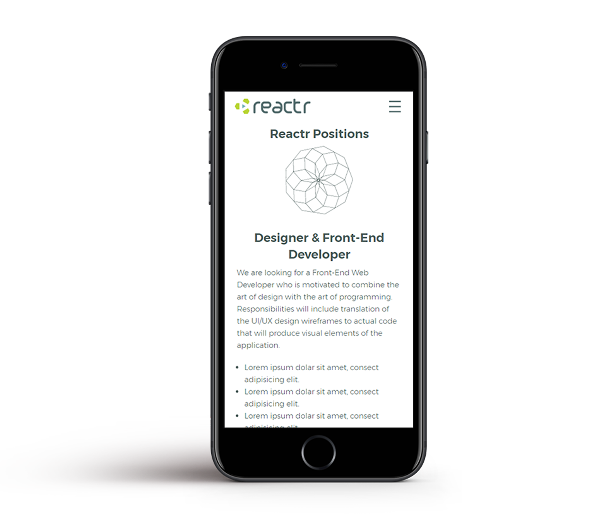
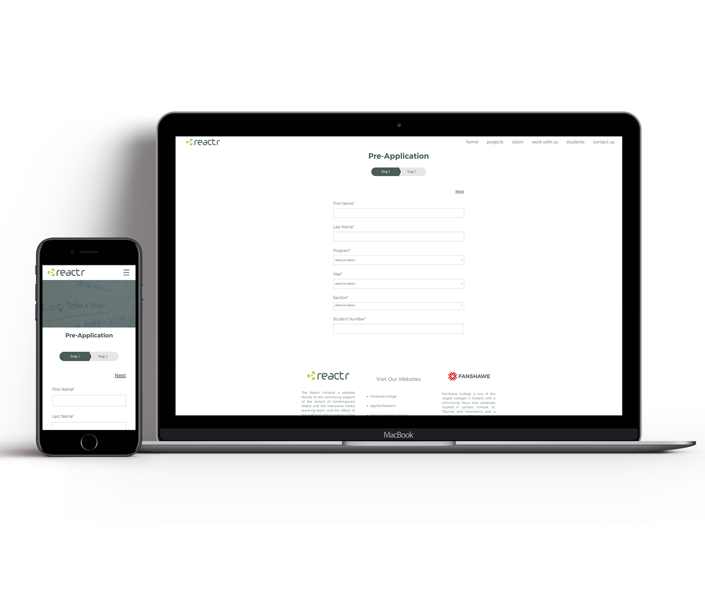

Being able to take part in helping to change and add to such a large scale website was a great first experience for me. With only a brief idea for what was expected from the student page I got to use my creativity and also expand in playing with white space on a webpage. When the final design was approved it was on to the developing stage.
The end result of the students page for Reactr was a clean spacious site for Fanshawe students in the Interactive Media Design program and the Interactive Media Specialist program to easily apply to work in Reactr. The use of white space, javascript and as well as diving into forms and databases taught me a lot about web design and development.
